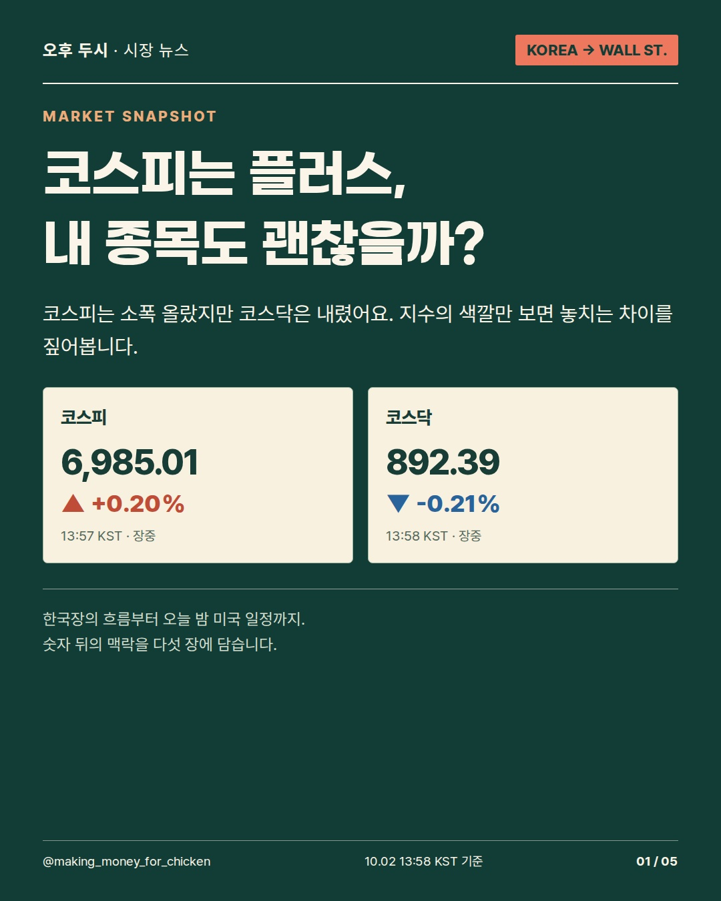
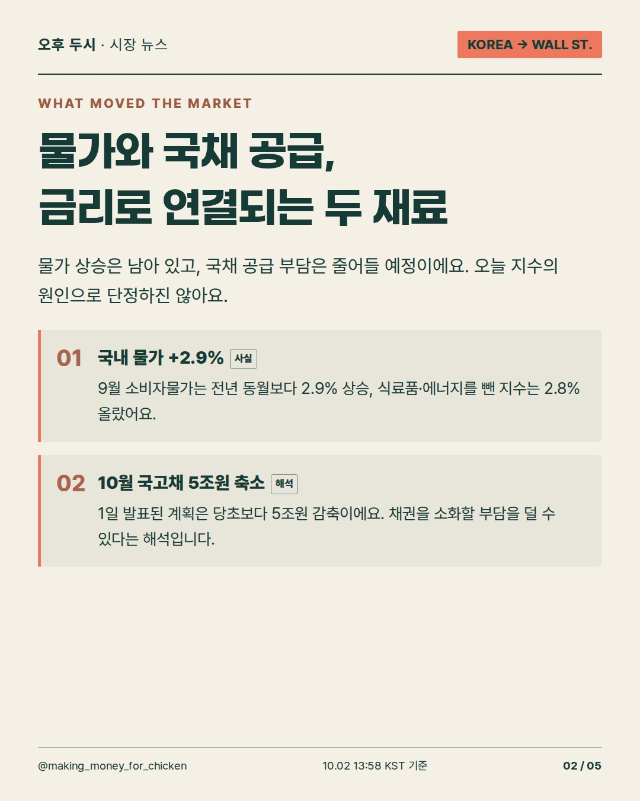
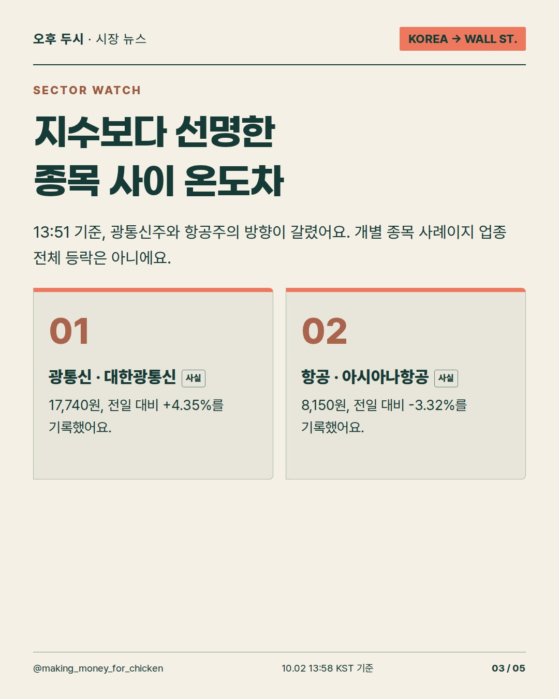
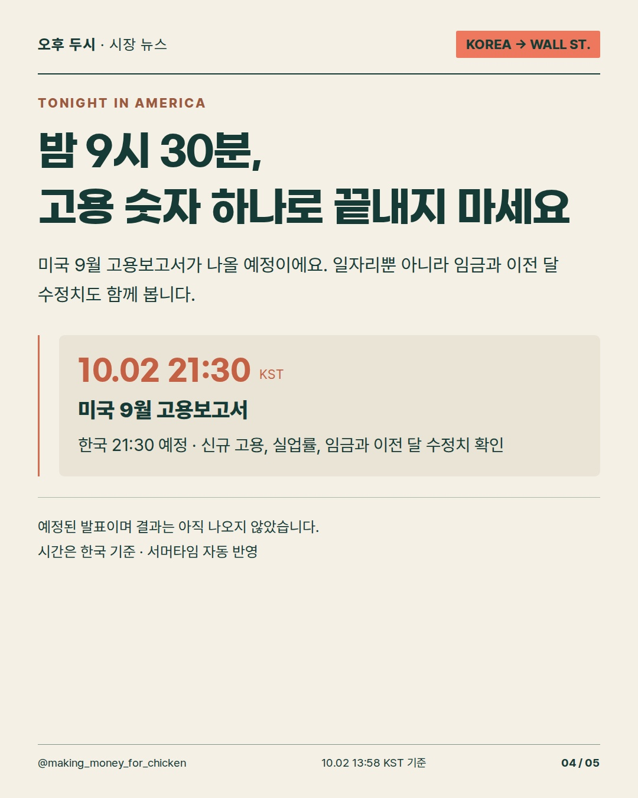
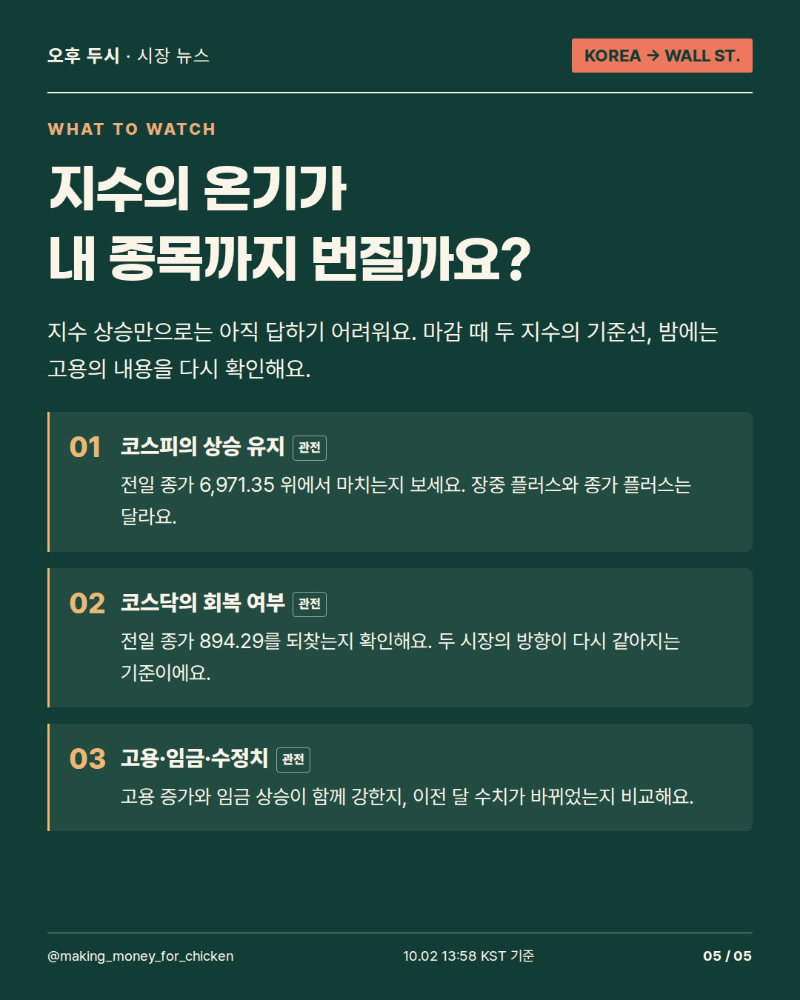

2026-10-02T13:58:30+09:00 기준 · 장중 수치는 이후 달라질 수 있습니다.
10월 2일 오후, 코스피는 올랐지만 코스닥과 개별 종목의 표정은 달랐어요. 국내 물가·국채 공급과 오늘 밤 9시 30분 미국 고용 발표를 함께 보고, 지수 상승이 내 종목까지 번지는지 확인해 보세요. #시장뉴스 #코스피 #미국고용





사실·해석·관전 포인트를 구분한 정보 콘텐츠. 투자 참고용 · 매수·매도 권유 아님.